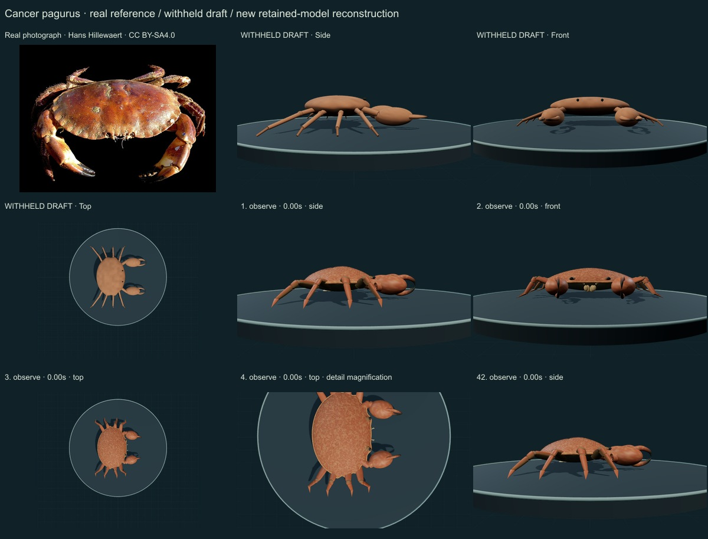
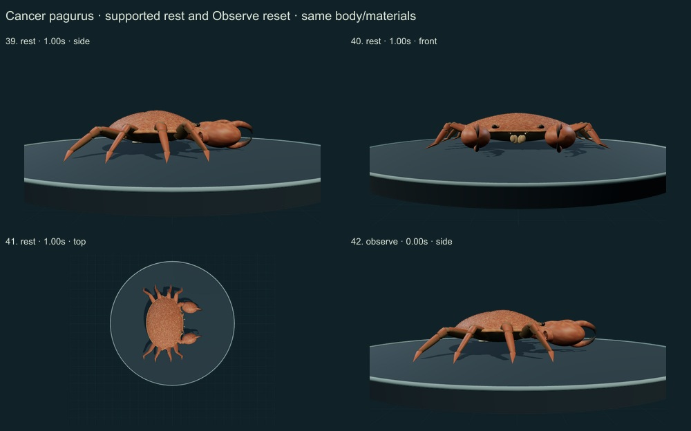
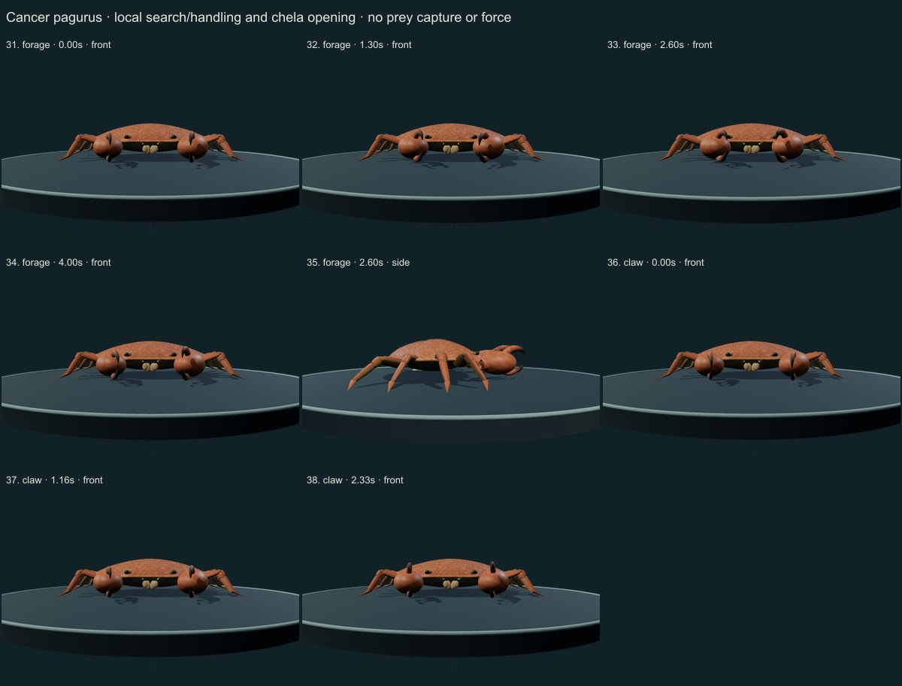
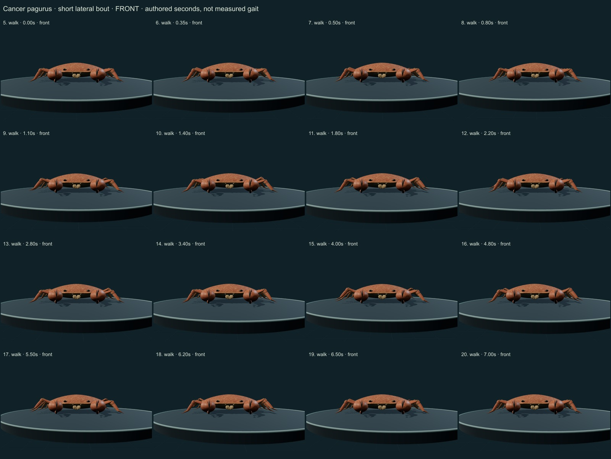
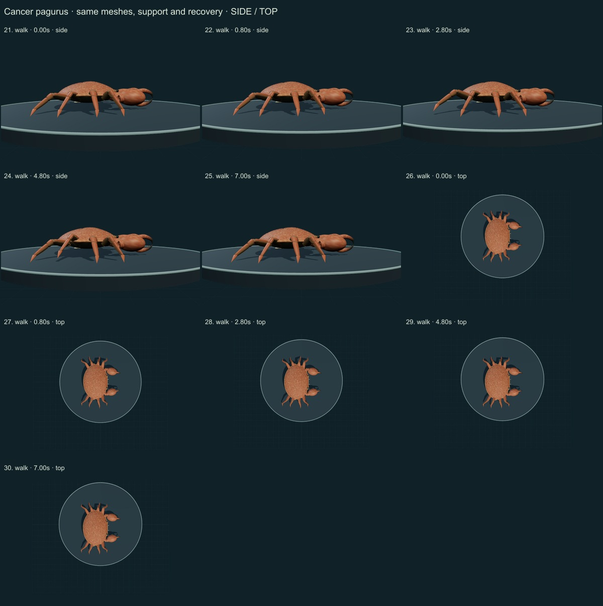

This release adds 1 species, bringing the collection to 251. 299 remain to reach 550: 49 saved drafts need correction/review and 250 additional records have no saved draft. The earlier 250-record report remains the historical v0.6.13 assessment.
Author compared all 42 final actual WebGL2 captured states on five labelled sheets against the retained licensed real photograph and selected institutional morphology/joint literature. This is not independent specialist review or a quantitative biological accuracy measurement.
No percentage accuracy is assigned. The common name “edible crab” follows MarLIN; GBIF also lists “brown crab” and “European edible crab”. Different vernaculars do not change the species concept. No new Smithsonian determination is claimed.
The MarLIN account is an institutional species account marked “not refereed”. Clarac & Dando 1973 was read at abstract/bibliographic level; no full-text experimental trajectories or muscle-force data were imported.
Authentic reference: Hans Hillewaert · CC BY-SA 4.0. The photograph is resized/JPEG encoded, without generative alteration. Numerical model material fields are original MIT code, not organism photographs.
Before: Smooth ellipsoid, weak margin, thin stick limbs, simple fingers and unresolved ventral anatomy.
Changed: Continuous broad domed carapace with rounded margin lobes and regional cues; eight fixed-length plated walking legs with joint membranes and setae; low support; paired short eye stalks; curved heavy black-tipped chelae with a hinged dactyl.
Still approximate: Proportions and lobe arrangement selected by visual reference, not digitized morphometrics. Simplified mouthparts, gills, internal anatomy and sex/age/moult variation.
Before: Near-uniform smooth brown surfaces without distinct cuticle, black tips or fine relief.
Changed: Original numerical pigment, fine granular instancing and exportable normal field; dorsal/ventral leg color separation. Reversed segment winding found during visual review was corrected before final captures.
Still approximate: No scan, calibrated albedo/roughness, measured chitin optics or individual wear. Color and fine relief remain an approximation of the selected photographic phenotype.
Before: Local finger motion on fixed limbs; no working supported walk.
Changed: Same meshes/materials throughout a short lateral walking bout with fixed segment lengths, planted stance tips and lifted recovery; settles and holds. Local search/handling, chela opening and lowered supported rest.
Still approximate: Authored phases, angles and uncalibrated seconds. No experimental gait data, force balance, proprioceptive control, continuous collision solver, food capture, ingestion, physiological process or sleep claim.
42 final states: side/front/top body and rest views, a front/side/top walking sequence, local search/handling, chela opening and Observe reset. Earlier superseded pale-leg captures are excluded.





Tests sample the walking bout for fixed segment lengths, supported stance, lifted recovery, finite transforms and retained meshes/materials. These checks test the authored mechanism. They do not establish biological joint limits or gait accuracy.
The actual browser export was checked: one embedded numerical normal texture and GPU instancing survive in the GLB. It exports the current static pose; no animation clip is included. Motion is implemented in the open source controller.
Download per-frame findings, source scopes and SHA256 checksums · Study the model